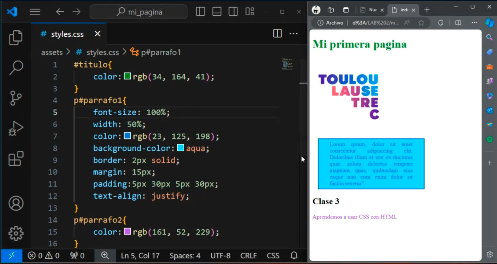

Sesión 4:
En la última clase vimos una introducción a CSS para poder estructurarlo de la mano con el archivo en HTML, y lograr modificar y personalizar una página web. Aprendimos que se pueden editar para poner imágenes de fondo, colores de texto, color de fondo, tamaño de una imagen, peso y tamaño de fuentes. Además, la importancia de usar fuentes que sean universales y pre-instaladas en la mayoria de dispositivos como Arial, Georgia y Times New Roman.
Sesión 5:
Aprendimos más sobre cómo decorar mejor la página en CSS, sobre cómo modificar los colores de los párrafos, personalizar los bordes, márgenes y padding. Editar el órden de alineamiento y fijamiento del texto y el establecer el ancho. Además, nos indicaron que podemos cambiar la opacidad del fondo. Nos mencionaron que la página tiene que ser responsive cuando sea abierta en diferentes dispositivos.
